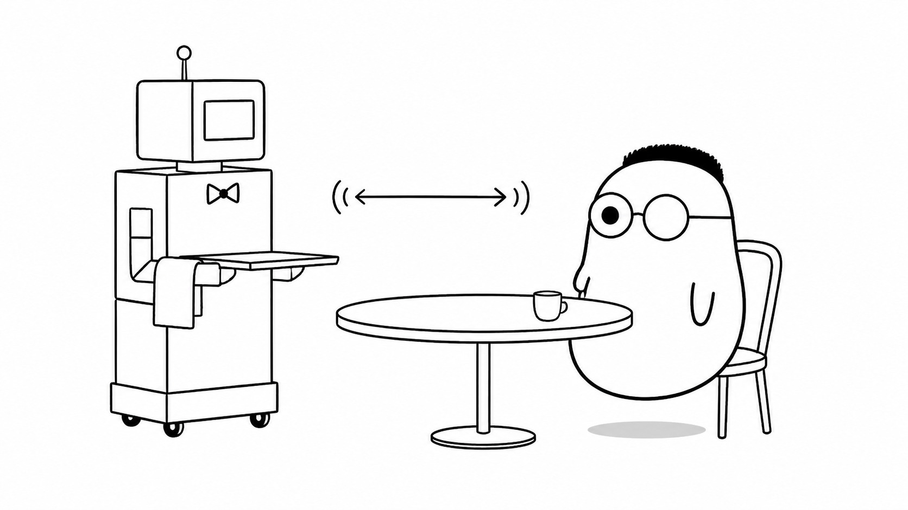
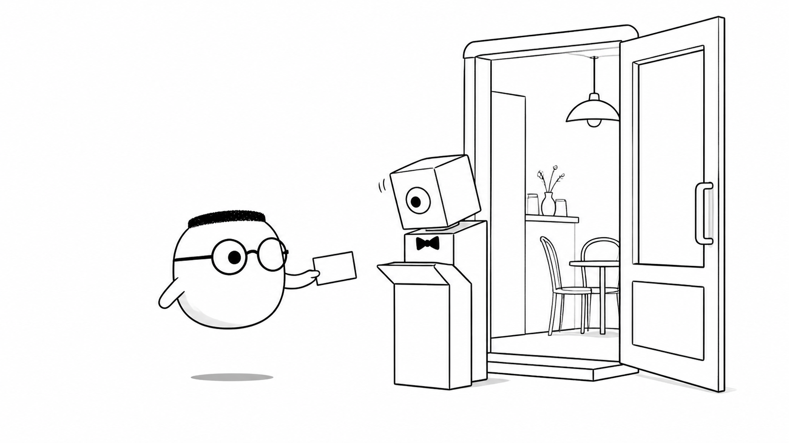
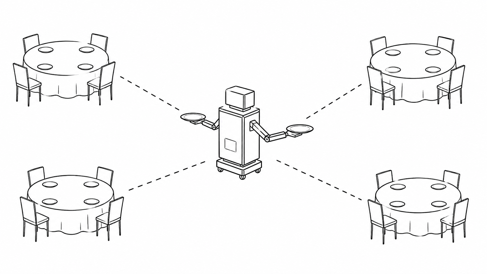

Masalah sehari-hari
Restoran perlu memberi tahu tamu saat pesanan siap. Cara lama membuat tamu mengirim pertanyaan berulang, "sudah jadi?" Sebagian besar pertanyaan mendapat jawaban "belum". Request terus berjalan, tetapi kabar penting tetap terlambat.
Analogi Kuka
Kuka duduk di meja. Pelayan berdiri di sampingnya dan tidak kembali ke dapur setelah satu pertanyaan. Mereka dapat berbicara kapan saja. Pelayan bisa membawa kabar lebih dulu, dan Kuka bisa berbisik saat membutuhkan sesuatu.
Mereka membuat kesepakatan sebelum pelayan menetap. Setelah itu, percakapan berjalan melalui satu koneksi yang tetap terbuka sampai salah satu dari mereka pamit.
Peta meja dan pelayan
Meja Kuka adalah klien. Pelayan adalah server. Jalur yang tetap terbuka adalah koneksi WebSocket. Percakapan dua arah adalah komunikasi real-time.
Ilustrasi

Pelayan tidak menunggu Kuka memanggilnya lagi. Ia sudah berada di sana. Kabar bisa bergerak dari dapur ke meja, atau dari meja ke dapur.
Penjelasan konsep
WebSocket adalah koneksi persisten dua arah antara klien dan server. Koneksi ini dibuka sekali, lalu kedua sisi dapat mengirim pesan kapan saja. Server tidak perlu menunggu request baru untuk mengirim pembaruan.
WebSocket berjalan di atas satu koneksi TCP. Ia biasanya mulai dari request HTTP, lalu berubah menjadi jalur WebSocket. Setelah berubah, data dikirim sebagai frame, bukan sebagai request HTTP baru untuk setiap pesan.
handshake adalah percakapan pembuka untuk meminta perubahan itu. Tamu berkata, "boleh pelayan menetap?" Klien mengirim header upgrade. Jika server menyetujui, ia menjawab 101 Switching Protocols. Koneksi kemudian terbuka untuk percakapan dua arah.

Spektrum real-time
Ada beberapa cara menunggu kabar. Polling bertanya pada jadwal tetap. Long polling menahan request sampai ada kabar. SSE mengirim kabar dari server ke klien. WebSocket memberi jalur dua arah. Pilih cara paling sederhana yang sesuai pesanan.
Frame
Frame adalah potongan pesan dengan penanda kecil. Potongan itu membantu penerima mengenali isi, urutan, dan akhir pesan. Pesan besar dapat dipecah menjadi beberapa frame.
Siklus hidup koneksi
Koneksi dimulai saat handshake berhasil. Ia lalu bertukar pesan. Ketika salah satu pihak pamit, close frame memberi tahu pihak lain dan koneksi ditutup dengan rapi.
Ping, pong, dan heartbeat
Pelayan sesekali bertanya, "masih di sini?" Itu adalah ping. Jawaban pong menunjukkan bahwa koneksi masih hidup. Heartbeat membantu menemukan koneksi yang putus diam-diam.
Server WebSocket
Server menerima handshake, menyimpan koneksi yang terbuka, lalu membaca dan mengirim pesan. Setiap tamu memakai sumber daya, jadi jumlah koneksi perlu dihitung.
Klien WebSocket
Klien memulai koneksi ke alamat WebSocket. Ia menerima pesan dari server dan dapat mengirim pesan sendiri. Di browser, klien biasanya memakai API WebSocket.
Manajemen koneksi
Server perlu mencatat tamu yang sedang ditemani. Ia juga perlu menghapus koneksi yang sudah tutup dan menangani error. Daftar yang rapi mencegah pesan dikirim ke tamu yang sudah pergi.
Broadcast dan room
broadcast mengirim satu kabar ke semua tamu yang terhubung. Room membatasi kabar pada kelompok meja tertentu. Chat umum memakai ruangan besar. Chat pribadi memakai ruangan kecil.

Backpressure dan consumer lambat
Tamu yang lambat mencatat tidak boleh dibanjiri kabar. Server dapat menahan pesan dalam antrean kecil, mengurangi laju kirim, atau memutus koneksi yang tidak sanggup mengejar.
Autentikasi
Kartu identitas perlu dicek sebelum pelayan menetap. Server dapat memeriksa cookie, token, atau pesan pertama setelah koneksi terbuka. Tamu tanpa izin tidak boleh masuk ke room.
Keamanan
Gunakan wss untuk jalur yang terenkripsi. Periksa origin, validasi pesan, batasi ukuran frame, dan batasi siapa yang boleh mengirim ke room. Koneksi terbuka bukan alasan untuk menghapus aturan.
Reconnection dan ketahanan
Pelayan bisa pergi karena jaringan putus. Klien dapat meminta pelayan baru dengan jeda yang makin panjang. Pesan yang terlewat perlu dicari lewat nomor urut atau sumber data lain.
WebSocket, SSE, streaming, dan polling
Polling sederhana, tetapi boros dan lambat. SSE cocok untuk kabar satu arah dari server. Streaming mengalirkan data secara bertahap. WebSocket cocok saat klien dan server sama-sama perlu berbicara cepat.
Jebakan umum
Jangan membuka koneksi untuk setiap pesan. Jangan menganggap koneksi akan selalu hidup. Jangan mengirim terlalu banyak data kepada semua tamu. Koneksi yang menetap perlu batas, pemantauan, dan penutupan yang jelas.
Diagram alur
Tamu meminta sekali. Server menjawab boleh. Setelah handshake, pelayan dapat menyodorkan kue tanpa ditanya dan tamu bisa berbisik kapan saja. Saat salah satu pamit, koneksi ditutup dengan rapi.
Contoh mini
Cara lama Tamu: "sudah jadi?" Tamu: "sudah jadi?" Tamu: "sudah jadi?" Cara baru Pelayan: "Kue langsung disodorkan."
Kartu pos ini memperlihatkan bedanya. Cara lama mengulang request. Cara baru menjaga satu jalur tetap terbuka dan mengirim kabar saat peristiwa terjadi.
Ringkasan
- WebSocket membuat koneksi persisten dua arah antara klien dan server.
- Handshake mengubah request HTTP menjadi koneksi WebSocket.
- Pesan bergerak dalam frame dan koneksi punya siklus hidup yang jelas.
- Ping dan pong membantu memeriksa apakah koneksi masih hidup.
- Server perlu mencatat koneksi, mengatur room, dan menangani tamu yang lambat.
- Autentikasi dan keamanan harus diperiksa sebelum pesan dipercaya.
- Reconnection membantu klien kembali setelah jaringan putus.
- SSE atau polling bisa lebih tepat jika komunikasi tidak membutuhkan dua arah.
Pertanyaan pemahaman
- Kenapa bertanya "sudah jadi?" berulang itu masalah, dan apa solusinya?
- Apa yang terjadi saat handshake upgrade?
- Kenapa pelayan perlu bertanya "masih di sini?" sesekali?
Mau lebih dalam
Versi teknis membahas protokol, kode server dan klien, serta cara mengelola koneksi real-time dalam sistem yang lebih besar.
Disinggung sekilas
Belum dibahas di sini
Crib-sheet dan rangkuman teknis ada di versi teknis.